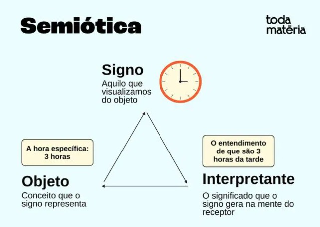
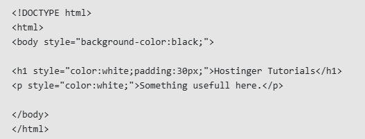
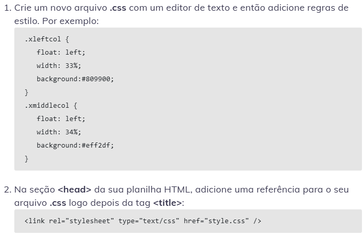

É o potencial de um objeto ou interface de sugerir suas funções ao usuário. Por exemplo, um botão em uma página web tem
uma forma e cor que indicam que ele pode ser clicado. O conceito vem da psicologia e é aplicado ao design para melhorar a
interação do usuário.[1]
Exemplo de Affordance
Semiótica
A semiótica é o estudo dos símbolos e seus significados, abrangendo uma ampla gama de sistemas de comunicação, desde a
linguagem verbal até as linguagens visuais, gestuais e musicais. Procura compreender como os sinais são produzidos,
interpretados e usados para construir significado e transmitir informações.
Conceitos da semiótica são:
Signo : Unidade básica de significado, composta por um significante (forma física) e um significado (conceito).
Significante : A forma física do signo, como uma palavra, imagem ou som.
Significado : O conceito ou ideia que o signo representa.
Relação significativa : Uma conexão entre o significativo e o significado, que pode ser arbitrária (como na linguagem verbal) ou motivada (como em ícones e índices).
Códigos : Sistemas de signos que permitem a comunicação, como a língua portuguesa, o código de trânsito ou a linguagem musical.
Interpretação : O processo de atribuição de significado aos signos, que pode variar de acordo com o contexto cultural e individual.
A semiótica pode ser dividida em três partes; Sintaxe, semantica e pragmatica.
A sintaxe estuda a relação entre os signos dentro do sistema, a semantica analisa a relação dos signos e seus significados
e a Pragmatica examina o uso dos signos em contexto especifico.[2]

Exemplo de Semiótica
Usabilidade
Usabilidade é a interação entre o ser humano e o computador, também é um termo que deriva da ergonomia. Ergonomia é a disciplina
que procura entender as interações entre pessoas e elementos de um sistema para otimizar o bem-estar e a performance
Nielsen:
"Usabilidade é atributo de qualidade para avaliar a facilidade de uso de uma interface. A palavra “usabilidade” também se refere
a métodos para melhorar a facilidade de uso durante o processo de design."[3]
Está bem claro que a janela de diálogo não está sabendo conversar com o usuário. Afinal, qual é o botão a clicar agora? Isso é um problema de usabilidade.
CSS
CSS, abreviação de Cascading Style Sheets, é uma língua de estilo usada para falar sobre o que está escrito em HTML ou XML. Ele
cuida do layout, do núcleo, das fontes e outros detalhes visuais de uma página na web.
Conceitos basicos do CSS são: Seletores, propriedades, valores, layouts, modelos de caixas, entre outros.
Esses citados são os responsaveis por incluir elementos, alterar cor ou fonte, margem e borda. [4]
Estilo Inline
Regras de CSS são adicionadas diretamente dentro da tag de abertura de um elemento HTML.

Estilo Externo
Regras de CSS são incorporadas a um arquivo HTML diferente daquele que contém os elementos da página.

Estilo Interno
Regras de CSS são adicionadas no mesmo documento que contém o conteúdo da página.